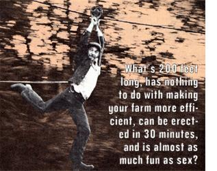

Every farm or homestead should have one, and you can build your own in a half hour, more or less. All you need are two sturdy trees located about 200 feet apart, with a gentle slope between 'em. Put up a ladder or nail some "climbing" boards to the uphill tree and-approximately 25 feet up its trunk -construct a simple but rugged platform that can accommodate a minimum of eight people.
(Eight? Why eight? Because ... you're gonna need at least seven buddies standing by your side to peer-pressure you into making your skyway's maiden voyage . . . that's why.)
Next, scrounge up 200-odd feet of cable that you're sure is strong enough to support more weight than your aerial tram will ever be asked to carry. (Forget trying to get by with rope. The stresses that a terrified, kicking and screaming, 180-pound skywaynaut can put on a pulley-frayed, 200-foot-long line is more than most ropes can bear.) We took out a permanent loan on some slightly rusted-but strong!-one-inch steel cable that we're pretty sure the factory down the street had thrown away.
If you don't have a cable jack handy, find (as we did) a buddy with a jeep winch and draw the cable up between your two trees as tightly as you can. No, you won't be able to pull all the slack from the line . . . but that's OK: The tiniest little bit of sag is essential to the smooth operation of your aerial tram.
There must be a whole lotta expert ways to secure a cable to a chunk of wood . . . but none of us knew any of 'em, so we just looped our line around each tree trunk until-with the addition of some baling wire-it formed sort of a hangman's noose. Then, for added security, we pried back some of the twisted hawser's strands and ran the baling wire right through the cable (just to make sure the line couldn't slip). It looks pretty bad, but our skyway has been up for three years now and is still holding.
OK. The only piece of equipment you need at this point to finish off your Slide Of Death . . . is a trustworthy command module. Ours is the six-inch pulley that we're pretty sure had been discarded because we found it next to the coil of slightly rusted cable that we're pretty sure the factory down the street had thrown away.
What we did to convert that old castoff piece of hardware into our command module was we scrounged up a piece of threaded pipe that fit right through the mounting hole on the pulley's frame (or block) with about six inches sticking out on each side. Then we ran a couple of nuts down the ends of the pipe until they were so tightly cinched up against the block that the resulting "handles" absolutely couldn't go anywhere. Next we forced some bicycle handgrips over the threads to protect our hands (you'll be surprised at the superhuman strength with which you'll clutch your module's control surfaces when the of adrenal glands really start pumpin' during the average trip down the skyway). And, finally, we looped a nylon cord through the hollow center of the pipe/grips and tied the ends into a "Y" with a 20-footlong tail which we use to walk the pulley back up to our launching platform after every trip down the of aerial tram.
First off, don't expect any reassurances from me. You knew this thing was a killer when you built it and you're already in over your head. All I can do now is pass along a few tips that-if observed-will virtually (note the emphasis) guarantee you against any kind of crippling injury. If you're crazy enough to actually use the Skyway Of Death you've just constructed, however, all bets are off. I assume no responsibility from this point on.
THE TAKE OFF: First, tuck the retrieval cord into your back pocket. Then grab the handgrips. (And grab 'em only all-byyourself-alone. Never attempt a tandem ride. We did ... once ... which resulted in our skyway's only serious-as in "hospitalizable"-injury. You've been warned.)
Second, check to make sure your flight path is clear (blackberry bushes can grow amazingly fast, as 1 painfully discovered one September morning). Then-slowly and carefully, but with an expression of composed nonchalancelower your weight onto the pulley and lift your feet. And, finally . . . as you roll away from the platform . . . scream bloody murder!
EN ROUTE: Some people like to make running motions through the air. Others just hang and scream. Whatever feels right.
THE LANDING: The fanciest skyway I ever saw had a classy spring contraption on the other end to ease each pilot to a gentle stop. Others feature cables strung out over a body of water to ensure (more or less) a soft letdown for their hapless riders.
The chances are, however, that you'll have to end your Slide Of Death the same way we do ours . . . which is, by dragging your feet. And that--ahem--leads me to a brief discussion of why the height at which you place your cable is so crucial: Put it too high . . . and only tall, heavy folks will be able to avoid bashing into the skyway's lower tree. Set it too low . . . and only the smallest and shortest in your crowd will get a decent ride. Naturally, then, it's very important that you work out a careful compromise based on the median height and weight of all the loonies who'll use your Slide Of Terror.
COMMAND MODULE RE-ENTRY: Good manners require that each sky. waynaut return the module to the launching pad following his or her flight. Injuriesunless the bone protrudes-provide absolutely no excuse for disregarding this rule.
And now you must pardon me, be. cause I've just been cleared for takeoff. AAAIIIIIYYEEEEEAAAAaaa . . . . !
|
 |
|
|